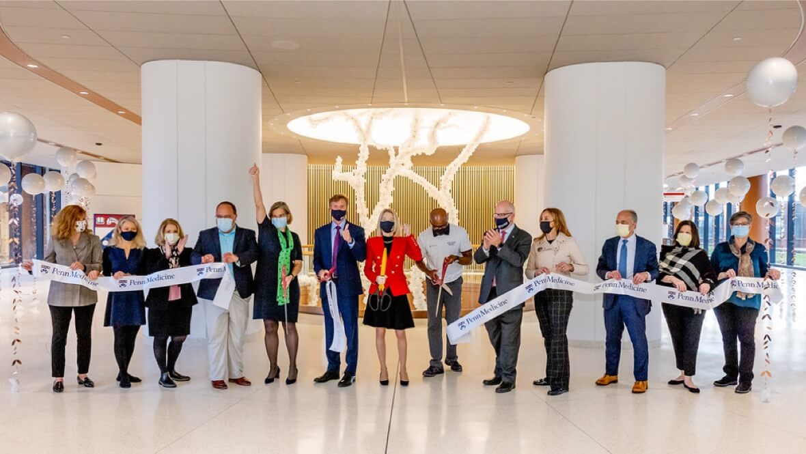
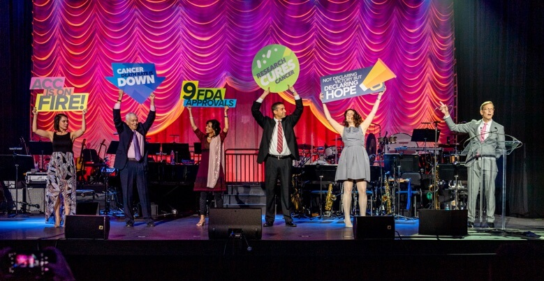
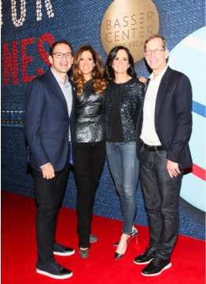
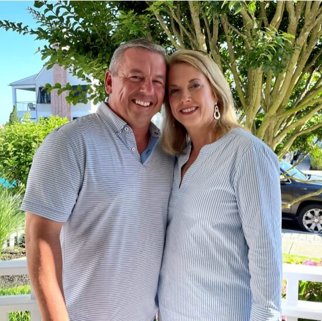

A spirit of generosity is woven into the fabric of the Abramson Cancer Center, and it is this thoughtful commitment of our philanthropic community that continues to energize our mission. Donors have helped revolutionize cancer research, care and education that has a ripple effect across the world. From pioneering new ideas and piloting clinical studies to educating the next generation of experts and empowering patients and families with knowledge—philanthropy is creating dynamic change for good.

The Impact of Giving
Powering the Pavilion: Donor Impact Creates New Space of Healing
Every aspect of the Pavilion—a revolutionary new facility to support Penn Medicine’s researchers, clinicians and faculty—adapts to developments in health care delivery. In the simplest terms: as health care evolves, so will the Pavilion. Much is owed to the philanthropic partnerships that helped make this center a reality.
Abramson Family Foundation
The Abramsons have a long legacy of championing cancer care and research at Penn Medicine. Their philanthropic spirit continues with a generous $10 million gift from the Abramson Family Foundation to help ensure Penn Medicine’s Abramson Cancer Center remains on the leading edge. In recognition of the gift, the lobby of the new Pavilion at the Hospital of the University of Pennsylvania will be named in memory of the late Emeritus Trustee Madlyn K. Abramson, who passed away in 2020.
Over the course of the past several decades, Madlyn and Leonard Abramson have given more than $163 million to the Abramson Cancer Center. They are moved by a vision to support the bold ideas and patient-centered approaches that have propelled the center to its global reputation as a leader in cancer care and research. The Abramsons were also steadfast, early partners in support of Penn’s response to the COVID-19 pandemic, contributing $1 million in support of COVID-19 research driven by the Abramson Cancer Center.
"The Pavilion’s Madlyn K. Abramson Lobby is a fitting tribute—generations of Penn Medicine patients will now be inspired with the same hope and compassionate healing that Madlyn imbued upon our community," said Robert H. Vonderheide, MD, DPhil, Director of the Abramson Cancer Center. "By investing in the innovation pipeline, the family’s gift will also fuel scientific discovery at the Abramson Cancer Center. With this new support, we will be able to do more of what we do best: be nimble and seize every opportunity when promising ideas emerge, so that we can get more novel therapies to our patients faster than ever before."
Dietz & Watson Bridge
This serves as a connector between the Pavilion and the Perelman Center for Advanced Medicine, bridging inpatient and outpatient care.
Deena, Arthur and David Ira Goldstein Patient Rooms and Care Station
This gives space for family members and caregivers to gather privately, or to meet with their loved one’s care team.
Esther and Marc Kaplin Patient Room
in honor of Kevin Mahoney, Chief Executive Officer for the University of Pennsylvania Health System
The new all-private rooms provide ample space for patients and their families to recover in a healing environment with all the latest clinical and entertainment technology—as well as thoughtful touches to optimize privacy. External Care Stations allow medical staff to provide care without disturbing rest.
"The Pavilion represents the very best of Penn Medicine—forward-thinking medical innovation paired with our Quaker spirit of providing the best care for all. It’s going to change—and save—lives, and we couldn’t be more grateful to our compassionate donors who are helping the Pavilion come together."
Kevin Mahoney, CEO of the University of Pennsylvania Health System
Green Family Commons
A busy hub of activity at the Pavilion, this large, interconnected space has a premier café to nourish the body—and highlights the breathtaking work of Maya Lin’s Tree of Life to heal the body as well as the soul.
Richard N. Berman Bone Marrow Transplant (BMT) Unit
The Berman Family has created a fitting tribute to Richard Berman in this new state-of-the-art BMT Unit, where immunocompromised patients will be cared for by the same expert staff—now in a space that can quickly adapt to keep them safe and comfortable during longer stays.
Large Family Waiting Rooms
in honor of John H. Glick and Madlyn Abramson
Located at the end of each patient floor, these serene spaces with breathtaking views allow families another area in proximity to their loved ones. These spaces were generously made possible by Jill and Alan Miller, Barbara Netter and Lyn Ross.
The importance of a named center comes in its ability to bring together people with different skill sets but the same core values to improve the lives of people facing cancer. We are grateful to the philanthropists who provide resources to make this possible.
From seamless care all in one location and integrated patient and family support to survivorship programs, the Abramson Cancer Center is there through every step of a patient’s cancer journey.
These centers benefit from the entire network of research facilities on Penn Medicine’s campus as well as collaborations between physicians and scientists which enable fast translation of discoveries from bench to bedside:
Abramson Cancer Center
Basser Center for BRCA 10-Year Anniversary
Richard Berman Family Innovations Center in CLL and Lymphomas
Paul F. Harron Jr. Lung Center 15-Year Anniversary
Jordan Center for Gynecologic Cancer 15-Year Anniversary
Mariann and Robert MacDonald Cancer Risk Evaluation Center 10-Year Anniversary
Mark Foundation Center for Immunotherapy, Immune Signaling and Radiation
Parker Institute for Cancer Immunotherapy 5-Year Anniversary
Rena Rowan Breast Center 20-Year Anniversary
Roberts Proton Therapy Center 10-Year Anniversary
Tara Miller Melanoma Center
Thalheimer Center for Cardio-Oncology
Timothy J. Wilmott and Dr. Nancy Barna Center for Endoscopic Innovation, Research and Training
Milestones & Legacies
Hope on the Horizon
The Tara Miller Melanoma Center (TMMC) celebrates the life and legacy of a woman who continues to inspire innovation and improve the lives of cancer patients and their families.
When the center opened in 2019, Tara’s doctor and TMMC Director Lynn M. Schuchter, MD, spoke about the personal significance of this moment—which was years in the making—and how the center is a fitting legacy for Tara.
Tara’s cancer journey began at the Abramson Cancer Center when she was diagnosed with stage III melanoma at the age of 28. Despite the seriousness of her diagnosis and a challenging 15 months of treatment, Tara never wavered from the fundamental values of her personality: a sense of humor and a tendency to think of others before herself.
Tara became a passionate advocate for melanoma patients, inspiring those around her through her strength and positivity, while articulating the importance of funding innovative melanoma research.
A few months before she passed away in October 2014, Tara founded the Tara Miller Melanoma Foundation, which has since raised more than $5 million for melanoma research, much of which is led by experts at the Abramson Cancer Center.
Now, thanks to a generous gift from Tara’s parents George and Debbie, the Abramson Cancer Center has established the Tara Miller Melanoma Center in testament to Tara’s passion, vision and voice. Combining resources from across Penn Medicine, the Center supports critical translational research, clinical initiatives and patient education and outreach opportunities. These crucial resources enable the center to pilot novel ideas and propel new treatments for melanoma patients worldwide.
"Tara left a lasting impression on everyone who had the privilege to know her, and now the research being done in her name will have lasting effects for patients far into the future," says Dr. Schuchter. "We feel honored and inspired that Tara will forever be a part of our efforts to cure melanoma."
Now researchers are strategizing ways to predict the success of therapies in advance and inform treatment plans to create better outcomes for patients, including:
Expanding clinical trial research for neoadjuvant PD-1 blockade in melanoma patients, to identify a response via imaging to help determine if a combination of anti-PD1 and anti-CTLA4 blockade is a more effective option.
Addressing resistance of cancer cells, which learn to evade strategies and develop resistance, by studying single cells to find evidence of a non-genetic origin of acquired resistance.
Penn Medicine Offers Best Retirement Wishes to a Pivotal Figure
John H. Glick
President, Abramson Cancer Center
John H. Glick, MD, established the medical oncology program at Penn Medicine and led the Abramson Cancer Center longer than any other director, from 1985 to 2006. At the conclusion of the 2021 academic year, Dr. Glick retired and assumed emeritus status, leaving behind an outstanding legacy.
But his incomparable contributions—and presence—will never be forgotten.
Dr. Glick has been an invaluable member of the Penn Medicine faculty since he joined in 1974 as the Ann B. Young Assistant Professor, having completed fellowships at National Cancer Institute (NCI) and Stanford. As director of Abramson Cancer Center, Dr. Glick made the center a national model for a comprehensive hub—one that influences the NCI Comprehensive Cancer Center designation to this day—having drawn on resources and faculty from myriad places. Then, in 1997, Penn Medicine received a transformative gift of $100 million from Leonard and Madlyn Abramson to establish the Abramson Family Cancer Research Institute aimed at transforming scientific breakthroughs into innovative cancer treatments.
During this time, Dr. Glick also became a driving force in philanthropy at Penn Medicine, galvanizing the philanthropic community to raise more than $600 million for Penn Medicine and the Abramson Cancer Center. From the Roberts Proton Therapy Center, the Perelman Center for Advanced Medicine and the Pavilion, to funding for clinical care programs, to the recruitment of expert scientists and training of the next generation of cancer specialists, Dr. Glick has left a lasting legacy on the footprint of medicine in Philadelphia and beyond.
Events
Connections that Unite the World Against Cancer
From Philadelphia to New York City to New Zealand, communities around the globe come together to raise awareness—and financial support—for cancer research and patient care. Passionate organizers adapted events into virtual formats, added safety protocols and embraced tools like Penn’s Giving Pages to honor loved ones and frontline healthcare workers and stay connected in a shared mission.

The (Literal) Fight Against Cancer
A star-studded event that brings together champions from across the cancer community, Philly Fights Cancer has raised more than $42 million for cancer research at the Abramson Cancer Center—drastically improving outcomes for people with cancer.
Founded in 2015 by the Abramson Family, Philly Fights Cancer brings together a powerful community of donors, cancer experts on the front line, and patients and families who share the Abramson Cancer Center’s commitment to the forward-thinking research and compassionate care for which the Center is internationally renowned.

Required Party Attire: Jeans
This year’s Basser Jean Bash, co-chaired by Mindy and Jon Gray and Shari and Len Potter, did more than raise a record-breaking $17 million for research at the Basser Center for BRCA. The fashionable event held in New York celebrated 10 years of progress and hope, featured a powerful set of advocates including tennis legend Chris Evert, and Penn’s new president Liz Magill, and ended with a special performance from Sarah Bareilles. The evening also raised critical awareness of BRCA mutations and helped spread knowledge to families at risk of BRCA-related cancers. By addressing BRCA from all sides, the Basser community is creating connections and discoveries that will help generations of families.
BRCA1 and BRCA2 gene mutations bring an increased risk for breast, ovarian, pancreatic and prostate cancers. These hereditary mutations affect both men and women, and can bring up to a 75% lifetime risk of developing breast cancer and up to a 50% risk of ovarian cancer.
Communities Come Together for Cancer Research
2013 marked the start of the Breakthrough Bike Challenge. Since then, this organization has raised over $2 million for cancer research at the Abramson Cancer Center. Now known as the Breakthrough Challenge, their community has grown even stronger by incorporating far more than a bike ride, including a virtual option. Developed in response to the pandemic, the virtual format helped them continue to fundraise and reach an even wider network. And what an impact the Breakthrough Challenge has made at the Abramson Cancer Center. Proceeds have helped 43 scientists with pilot funding to pursue their novel ideas, building our pipeline for innovation and this powerful community.
In the spirit of paying it forward, in 2020, Penn cancer researcher and BBC Cooper Scholar, Alfred Garfall, MD, and his son pedaled 100 miles for the cause, joining nearly 500 fellow bikers, spinners, runners and walkers who logged 20,875 miles in the challenge.
"Potential donors to research may think: These projects take so much money, how could I possibly make a difference?" Dr. Garfall says. "The key is that the effect multiplies. That seed funding, even if it’s modest, enables us to get larger amounts from outside sources."
Jay Sigel Invitational
Since its start 30 years ago, the Jay Sigel Invitational has raised more than $3M for prostate and breast cancer research at the Abramson Family Cancer Research Institute (AFCRI)—helping to transform a relatively underfunded area of cancer research into a hub of activity and advancement. This loyal community has helped foster an environment where researchers work hand-in-hand with clinicians to translate basic science discoveries into personalized therapies that benefit cancer patients throughout the world.
Bury Your Memories
A group of like-minded folks gather the pop-punk community for a nationwide musical concert to raise money for patients and families experiencing financial distress as a result of cancer.
Steps to Cure Sarcoma
This Pennsylvania 5K run and walk fundraiser—now in its sixth year—for the Penn Medicine Sarcoma program, a collaborative endeavor between Penn Medicine, The Children’s Hospital of Philadelphia and Penn Vet, focused on developing new approaches to diagnosing and treating pediatric and adult bone and soft tissue tumors. What started as a gathering of a few hundred people supporting a rare disease now represents a passionate community that has contributed nearly $1M to sarcoma research at Penn.
FDeen
Queenstown Half Marathon
Avid runner and U.S. expatriate Sarah Parkinson lives in New Zealand. Being far from home is not easy, so to help feel more connected and to honor her mother who passed away from cancer, she dedicated her participation in a local half-marathon to help raise money for the Abramson Cancer Center.
Leadership
Leadership Volunteers
Members of these esteemed councils have taken their generosity to the next level by committing their time, connections and philanthropic resources to empower the Abramson Cancer Center community.
Director’s Leadership Council
The Abramson Cancer Center Director’s Leadership Council (ACCDLC) plays an instrumental role in the success of our mission by raising the resources necessary to support our most critical needs, and bring hope to cancer patients and their families. ACCDLC members are among our most vital advocates, ambassadors and donors.
Members
Michael Axler
Daniel Berger
Ilene Berger
Sharyn Berman
Janice Blumenthal
Gary Blumenthal
Julie Borrelli
Jason Borrelli
Sandy Brown
Andrew Brozman
Richard Campbell
John Castleman
Sheila Chacker
Edward Chacker
Andrew Cohen
Cheryl Colleluori
Robert "Bo" Ebby
Christine Edmonds
David Feldman
Judith M. Glick
David Goldstein
Sara Gowing
Harry Hayman
Duncan Hennes
Barbara Herzlich
John Hyman
Esther Kaplin
Marc Kaplin
Kimberly Karnell
Rhonda Kessler
David Kessler
Ronald Kresge
Lisa Lee
Bob Levis
Scott Lustgarten
Minhaz Manji
Patrick McNichol
Charles Meyers
Kristina Miller
Leslie Anne Miller
Megan Nicoletti
Margaret Anne Nolen
Lauren Miller Parker
Stacey Pellegrini
Shari Potter
Margarita Rooke
Andrew Rooke
Lynn Roseman
Jerry Rosenbloom
Loretta Schatz
Ken Schatz
Barbara Schiffrin
Richard Schiffrin*
Benjamin Shein
Deborah Stamm
Rick Stamm
Jennifer Stern
Carol Summers
Robert Summers
Joan Thalheimer
Jackie Topaz
Marc Topaz
Deborah Feith Tye
Inez Wade
Barry Wade
Nancy Wolfson
Joshua Wolson
*Chair
Emeritus
Rose Astor
Paul Astor
Steven Atlass
Lynda Barness
Eileen Brode
Ellen Caplan
Ronald Caplan
Betsy Cohen
Sandra Cozen
Stephen Cozen
Sylvia DiBona
Donna Feinberg
Bonnie Fox
Nancy Fox
Robert D. Fox
Elizabeth Gemmill
Carole Gravagno
Mindy Gray
Peggy Kahn
Andrew Kahn
Sarah Keating
Daniel Keating
Helene Kendall & Family
James Kravitz
Ellen Lee
Suzi Lustgarten
Mariann MacDonald
Robert MacDonald
Karen Matthews
James Matthews
Debra Miller
George Miller
Stacey Mobley
Ruth Nathanson
Richard Prezelski
Sean Rooney
Gerard Rosato
Rafael Rosato
Lyn Ross
Ann Sorgenti
Mary Anne Stetzer
Barbara Sylk
Leonard Sylk
Richard Vague
Andrew Wilson

Donor Profile
New ACCDLC Members Julie and Jason Borrelli are Already Making an Impact
Julie and Jason Borrelli recognized the opportunity at Penn to create a meaningful difference for families affected by Lynch syndrome (LS), a hereditary genetic disorder that greatly increases a person’s risk for developing gastrointestinal cancers, as well as multiple other types such as skin and reproductive cancers. They have laid the foundation for better understanding the immune system’s role in LS with $2.6 million in support for work led by John Wherry, PhD, Chair of Systems Pharmacology and Translational Therapeutics and Director of the Institute for Immunology, and Bryson Katona, MD, PhD, Assistant Professor of Medicine—collaborators who bridge immunology research and gastrointestinal cancer clinical care to develop novel therapeutic strategies for families seeking options.
Infused with philanthropic resources, the team can now characterize the immune profiles of individuals living with LS and build a bio-bank of samples to help the entire scientific community focus on conducting research in this understudied disease.
Julie and Jason reflect on making their gift:
"Research and awareness are lacking for Lynch syndrome, and we knew about Penn’s strength in the immunology space, so we inquired if there was any potential in using this science to target LS. When we met with the team to hear more, the ideas were all there. They just needed the funding. So we went home and thought about how we could make this happen. Working together with the development team, we structured the gift over five years. It’s been incredibly rewarding to set this dynamic group of scientists up with resources to pursue knowledge in an area they otherwise may not have, but has promise for so many families."
BRCA
Leadership Volunteers
The Basser Center Advisory Board advocates, informs and engages on behalf of the Basser Center. The board enhances and supports the center’s mission and provides hope to patients and families by securing the resources needed to accelerate BRCA-related research, care and education.
Members
Tamsen Brown
Joe Campolo
Margaret I. Cuomo, MD
Gary Fuhrman
Cindy Price Gavin
Susan Getz
Mindy Gray*
Michael J. Haas
Raquel Flatow Haas
Whitney Wolfe Herd
Lisa Jacobs
Michele Konner
Paul Lattanzio
Trace McCreary
Shari Potter
Jessica Queller
Heidi Rieger
Stacey Sager
Ilana Katz Sand, MD
Michael Sand
Mara Burros Sandler
Helene Sorin
*Chair
Helene Sorin
Helene was diagnosed with breast cancer after her first mammogram at the age of 40, and learned that she had a BRCA1 mutation. Thirteen years later, she was diagnosed with another primary breast cancer and, once again, went through a series of aggressive treatments.
Along with her husband Rob, Helene has supported several of The Basser Center for BRCA’s key initiatives, including its scholarship for underrepresented minority students pursuing a master’s degree in genetic counseling at the Perelman School of Medicine. She and Rob have also included Basser in their estate plans, ensuring a legacy of support.
With an MBA from the Wharton School at the University of Pennsylvania, Helene is no stranger to Philadelphia. After 20 years in finance, she is eager to help make a difference in the fight against BRCA-related cancers as a proud member of Basser’s Advisory Board. She is also co-chair of Basser’s Parents Leadership Community and her daughter, Jenny, is co-chair of Basser’s Young Leadership Council.
Innovation
The Innovation Advisory Board (IAB)
The IAB is a group of civic and corporate leaders who accelerate our cancer research enterprise by offering their strategic business and community expertise, along with their advocacy, engagement and connections.
Members
Daniel K. Fitzpatrick
Gerald P. Francesco, Jr.
John S. Grady, Jr.
Brian F. Hughes
David Alan Jacobs
Laura M. Liotta
Dean E. Miller
Peter P. Paoli
Leonard A. Potter
Joanne R. Soslow
Harlan M. Stone
John G. Troiano
Richard W. Vague*
Zachary W. Weinberg
Jeffrey L. Weiss
*Chair
David A. Jacobs
David Jacobs is a true Penn citizen. In addition to receiving both a bachelor’s degree in economics cum laude and an MBA from the Wharton School, David is a philanthropic leader and a founding member of the Abramson Cancer Center’s Innovation Advisory Board. A Managing Director at OpCapita, LLP, David brings not only his perspective as an alumnus to our community, but also shares a wealth of experience from his long career in private equity, investment banking and financial advisory in both domestic and global markets.
Philanthropy is fundamental to David, his wife Robin, and their three children, Alex, Daniel and Izzie, who generously support multiple areas across Penn Medicine—from institutional priorities like pilot funding to explore high-risk, high-reward ideas, to paying tribute to a loved one by investing in the field of sarcoma research.
David and his family’s giving also reflects a deep gratitude for compassionate patient care and a belief in supporting talented physicians—including gifts to the Department of Otorhinolaryngology as well as dedicating a new space in the Pavilion for physicians to recharge as they care for our patients and families.
David’s strong ties to the Penn community and his impactful advocacy for the Abramson Cancer Center’s Innovation Advisory Board make him an inspiring champion for our mission and instrumental in the scientific strides of our future.
Partners in Hope
Thank You to Our Donors
Like every patient, each donation we receive is special and important. Individually, each person makes a difference; collectively our many friends help write the next chapter in cancer research and patient care.
No Matches
$100,000 & above
The 1111 Foundation
Jimmy Abrams
Wendy Abrams
Leonard Abramson
The Abramson Family Foundation
William Ackman
Agilent Technologies, Inc.
Christopher Alf
Lori Alf
Barbara Alleva
James Anderson
Susan Anderson
AON Consulting Corp.
Bank of America Corporation
Nancy Barna
Estate of Ellen Baum
Sally Bellet
Lee Berg
Ilene Berger
Steve Berger
Ilene Berman
Sharyn Berman
Steven Berman
The Richard Berman Family Fund
Better Our World Family Foundation Inc
Eric Bischoff
Jane Bischoff
Herbert and Diane Bischoff Foundation
Joan Blackman
Murray Blackman
Blackstone Charitable Foundation
Jason Borrelli
Julie Borrelli
Wilson Braun, Jr.
Mary Braun
Breakthrough Challenge
James Breyer
Elizabeth Brodie
Stefan Brodie
Brodie Generational Capital Partners
Michael Brown
Sandra Brown
Sidney Brown
Tamsen Brown
Bernadette Buccini
Barry Bucher
Ruth Bucher
Mara Burros Sandler
Joe Campolo
Angela Campolo
Debra Caplan
Ken Caplan
John Ceriale
Melissa Ceriale
Angela Chao
Chatham Financial Corporation
Chatsworth Revocable Trust
Chester County Hospital Foundation
Frank Cohen
Julie Cohen
Giovanni Cutaia
Maree Cutaia
Michael Danziger
Rhoda Danziger
Irina Denisova
The Derfner Foundation
Joyce Diem
Kenneth S. Donner Trust
Dorman Products, Inc.
Douglas Eisenberg
Wendy Eisenberg
Fieldstone 1793 Foundation
Keith Flaherty
Julie Franklin
Martin Franklin
Donald Gant
Genentech, Inc.
Estate of John Giammaria
The Giorgi Family Foundation
Glenmede Trust
Carl Goldsmith
Jon Gray
Mindy Gray
Gray Foundation
Duncan Hennes
Laura Hennes
Mike & Patti Hennessy Foundation
Michael Herd
Hess Foundation, Inc.
Dennis Holewinski
Susan Holewinski
Giovanna Imbesi
John Imbesi
Patricia Imbesi
David Jacobs
Robin Jacobs
Jewish Communal Fund of New York
The John and Kathleen Schreiber Foundation
George Johnson, Jr.
Susan Johnson
The Johnson Group
Pier-Anthony Jolicoeur
Jones Lang LaSalle Americas Inc
Barbara Jordan
J.P. Mascaro & Sons
J.P. Morgan Charitable Giving Fund
Robert J. Kahn Foundation
Christine Kaplan
Jordan Kaplan
Esther Kaplin
Marc Kaplin
Mira Kautzky
Charles Kaye
Sheryl Kaye
Estate of Theresa Kelly
David Kessler
Rhonda Kessler
Kevin Kiernan
Patricia Kiernan
Cynthia King
Jeffery King
Kristin Kligerman
Sean Klimczak
Kevah Konner
Michele Konner
Estate of Sue Kremer
Jonathan Kushner
Kim Kushner
Laffey-McHugh Foundation
Curtis Lane
Stacey Lane
Marc Leder
Catherine Leung
Jay Lieberman
William Lockwood, Jr.
Mariann MacDonald
Robert MacDonald
Mary Alice Malone
Michael Mann
Barbara March
Roy March
Pasquale Mascaro
Susan Mascaro
Trace McCreary
Brian McEvilly
Carmel McEvilly
Nadeem Meghji
Sheffie Meghji
Elaine Messner
Harold Messner
Messner Foundation, Inc.
Ivan Metzger
Charles Meyers
George Miller, Jr.
Debra Miller
John Mills
Bruce Moore
Lori Nash
Michael Nash
Nash Family Foundation
Barbara Netter
James Nicolo
Palmira Nicolo
James Nolen, IV
Margaret Nolen
Carlos Nottebohm
Renee Nottebohm
Andrew Nussbaum
Darcy Nussbaum
Andrea Orsher
Robert Orsher
Neri Oxman
Paint Pittston Pink
Maureen Paoli
Peter Paoli
Patriarch Family Foundation
Pershing Square Capital Management, LP
Michael Polsky
Len Potter
Shari Potter
David Pottruck
Richard Powell
Seana Powell
Victoria Prendergast
Joseph Punia
Sheryl Punia
Raynier Institute and Foundation
Scott Rechler
Gregory Ressa
Margo Ressa
Heidi Rieger
Richard Rieger
Roemer Foundation
Beth Rosenbloom
Jerry Rosenbloom
Lyn Ross
Biff Ruttenberg
RXR Realty
Gail Saltz
Leonard Saltz
Gary Saltz Foundation
John Schreiber
Kathy Schreiber
Christine Schwarzman
Stephen Schwarzman
Barbara Sciandra
James Scully, Jr.
Marlene Scully
Scott Seligsohn
Stephen Silk
Sue Silk
Silk Family Foundation
Simpson Thacher & Bartlett, LLP
Helene Sorin
Robert Sorin
Michael Stanfield
Sharon Stein
William Stein
Howard Stoeckel
Tara Miller Melanoma Foundation
TC Services 01 LLC
The Kaplan Family
Tishman Speyer Properties, Inc.
Jacqueline Topaz
Marc Topaz
H. Lynn Tractman
John Troiano
Rosanna Troiano
Truist Financial
United Way of Greater Lehigh Valley
University of Pennsylvania (HK) Foundation Limited
Laura Vague
Richard Vague
Michael Valucci
Nancy Valucci
Estate of Valerie Vargo
Wachtell, Lipton, Rosen & Katz
Deborah Whitesell
Thomas Whitesell
Constance Williams
Estate of Mary Williams
Sankey Williams
Timothy Wilmott
George Wolf, Jr.
Whitney Wolfe Herd
David Wolk
Susan Wolk
Jeff Worthe
Kristin Worthe
Worthe Real Estate Group, Inc
WWH Foundation
$10,000 to $99,999
1622 MGD Foundation
1956 Otto Haas Charitable Trust
Howland Abramson
Kelly Abramson
Acacia Research Corporation
AG Adams Law, P.A.
AJ Agarwal
Roswitha Agarwal
Air Products and Chemicals, Inc.
Abass Alavi
Jane Alavi
Alliant Insurance Service, Inc.
Catherine Altman
Laurence Altman
American Competitiveness Institute
American Endowment Foundation
Samir Amichi
Anonymous
AQUA, LTD
Arguild Foundation
Steve Ariel
Arnold & Porter, LLP
Jeff Aronson
Shari Aronson
Michael Axler
Susan K. Axler Foundation for Breast Cancer Cures, Inc.
B.A.C. Cancer Transportation Fund
Karin Bain and John Kukral Foundation
Kathleen Baldwin
Matthew Baldwin
Banco Santander, SA
Banco Santander, SA - London Branch
Nan Barash
Abigail Baratta
Joseph Baratta
Lois Barker
Barkey Corporation
Nancy Barnabei
Ruth Ann Batten
Joseph T. Batten Legacy Fund
Lawrence Baum
Maria Baum
Saida Baxt
Sherwood Baxt
Anson Beard
Tim Beaudin
Barbara Beaudry
John Beaudry
Mary Ann Bedwell
Thomas Bedwell
Phil Belling
Caroline Bentley
Gregory Bentley
Bentley Systems, Inc.
Constance Berg
Donald Berg
Laurence Berg
Lee and Ian J. Berg Fund
Bergman Foundation
Bergstrom Foundation, Inc
David Berkman
Pamela Berkman
Sybiel B. Berkman Foundation
Bryna Berman
Fred Berman
Janet Berman
Wayne Berman
Sarah Bernard
Best Conqueror Limited
BioMed Realty, LP
Laura Blankfein
Lloyd Blankfein
Jeff Blau
Jeannie Blaustein
Allison Blitzer
David Blitzer
Jerome Bogutz
William Bohn
Roxanne Bok
Scott Bok
Yasmin Bokhary
Peter Bokor
David Bonderman
William Borzi
John Bown, Jr.
Pamela Bown
Andrea Boxer
Steven Boynton
Estate of Theodore Breckel
Peter Bresnan
BRG Services, LLC
Ronald Bridges
Steve Briggs
Carol Brightman
Thomas Brightman
Barbara Brockardt
James Brockardt
Eileen Brode
Brookfield Partners Foundation
Bobbi Brown
Brownstein Hyatt Farber Schreck
Michele Buck
Buddy Foundation Fund
Stewart Cades
Annette Canby
Phillip Cannella, III
Lori Canzanese
Barbara Caplan
Carlyle Investment Management, LLC
Norma Carretta Charitable Fund
Carve for Cancer
Herbert Caskey
Cassin & Cassin, LLP
Edward Chacker
Sheila Chacker
Alexa Chae
Michael Chae
Charles J. Schwab Foundation, Inc.
Chicago Title Insurance Company
Chinh Chu
Gregory Church
Maureen Church
CIBC World Markets
Lisa Cifrese
Citigroup, Inc.
CityView Management Services, LLC
Ric Clark
Clayman Family Foundation
Gretchen Clayton
Jay Clayton
Andrew Cohen
Joy Cohen
Lisa Cohen
Paul Cohen
Robert Cohen
Stephen Cohen
Marjorie B. Cohen Foundation
Victor Coleman
Christos Coutifaris
Brahm Cramer
Estate of David Crane
Crawford & Company
Alan Criswell
Jacqueline Criswell
Estate of Nancy Crumling
Margaret Cuomo Maier
DAS Fund
Merrill Davidoff
Davidson Kempner Capital Management
The Dayspring Foundation
Andrea de Botton
Paul de Botton
Michael Dean
Dee Foundation
Edwin Detrick
Sylvia DiBona
G. Fred & Sylvia DiBona Family Foundation
Jeffrey Dickson
JoAnn Dickson
Heather Dill
Jeffrey Dill
Barry Dinaburg
Shari Dinaburg
Anthony DiSandro
Lillian DiSandro
Edye Discount
Stuart Discount
Brian J. Discount Melanoma Fund
DivcoWest
Donationxchange
Kathryn Donnelly
Elizabeth Donohoe
Kevin Donohoe
Joseph Dowling
Anne Drennan
Deborah Driscoll
Eva Dubin
Glenn Dubin
Lowell Dubrow
Keith Dunoff
Eastdil Secured, LLC
Caroline Ebby
Robert Ebby
Peri Edelstein
Blair Effron
Cheryl Effron
Con Egan
Meaghan Egan
Katharine Elek
Martin Elias
Ike, Molly & Steven Elias Foundation
Judy Eng
Israel Englander
Lucia Englander
Erdenheim Farm, LLC
Elaine Ermentrout
Gerald Ermentrout
Evercore Partners
Betty Ewing
Katherine Farley
Linda Farrell
Anna Marie Farro
Karen Farruggio
Samuel Farruggio
Fashion Footwear Charitable Foundation, Inc.
Barry Feinberg
Donna Feinberg
Jonathan Feinberg
Stacy Feinberg
Christian Fenstermacher
Tracey Fenstermacher
Alexia Fernandez
Henry Fernandez
Victor Finnegan
Jonathan Firestone
Samantha Firestone
Allison Fisch
Steven Fisch
Estate of Faye Fisher
Debra Fishman
Deborah Flexner
Thomas Flexner
Andrea Flink
Forever Foundation
Fox Run Hospitality Advisors
Franke & Company INC.
Linda Frankel
John Freiberg
Fried, Frank, Harris, Shriver & Jacobson, LLP
Barbara Friedman
Dorian Fuhrman
Gary Fuhrman
Full Circles Therapeutics
Mark Gallogly
Andrea Garber
Brooke Garber
Mitchell Garber
Daniel M. Neidich and Brooke Garber Foundation
Brian Gavin
Cindy Gavin
Hannah Gentilcore
James Gentilcore
Edward Gerner
David Getz
Susan Getz
Lee Gitlin
Richard Glazer
Wendy Glazer
Joseph Goldbeck
Mary Goldbeck
Harvey Goldberg
Rosalie Goldberg
Goldman Sachs & Co.
David Goldstein
Barbara Gomes
Bennett Goodman
Meg Goodman
Rohan Gopaldas
James Gowing
Sara Gowing
Lisa Grabell
Neal Grabell
L. Christine Grad
Juliet Gray
Michael Gray
Richard Gray
Frederick Greenberg
Marjorie Greenberg
Greenberg Traurig, LLP
James Greene
James H. Greene, Jr. Fund
Amy Griffin
John Griffin
Carl Gross
Michael Gross
Vicki Gross
Violet Gross
GTCR, LLC
Gunster Yoakley & Stewart
Janet Haas
John Haas
Michael Haas
Raquel Haas
Otto Haas Charitable Trust
John Hafner
Holly Hagens
Barry Haimes
Jane Haimes
Susan Hakkarainen
Asim Hamid
Jennifer Handler
Richard Handler
Sean Handler
Susan Hanft
Mitchell Hankin
Eric Haron
Hope Haron
Kristen Harper
Robert Harper
Linda Harris
William & Anne Harrison Foundation
Jane Hartley
Alan Hartman
Kim Hartman
Raymond Haupt
Chris Heady
Healthnetwork Foundation
The Hershey Company
Karen Herskovitz
Steps to Cure Sarcoma
Larry Hicks, III
Kathleen Higgins
Robert Higgins
Hilton
Hilton Center of Excellence
Wayne Hinman
David Hirsh
Ethel Hofman
Marc Holliday
Sheree Holliday
John Hyman
IBEW Local Union 98
Gretchen Jackson
M. Roy Jackson
Lisa Jacobs
Samuel Jacobs
Dalia Jakas
JAK Fund
Alexa Jakobi
Robert Jakobi
J. Larry Jameson
Michele Jameson
Jefferies, LLC
Jewish Federation of Greater Philadelphia
Olivia John
John & Amy Griffin Foundation Inc.
Christin Johnson
Douglas Johnson
Timothy Johnson
Jenny Johnson Family Foundation
Johnson Family Good Works Fund
Lisa Jones
Teresa Jones
Jones Day
The JPMorgan Chase Foundation
JVZ Foundation
Kalfter Kestenbaum Foundation
Sonny Kalsi
Ilana Katz Sand
Andrew Katz
Deborah Katz
Dan Katzin
Daniel Katzin
Susan and Dan Katzin Family Fund
The Katzin Foundation
Kathleen Kelly
Thomas Kempner
The Kessler Family
Nancy Kestenbaum
Katherine Ketcham
Kicks4Chris Foundation
The Kiebanoff-Cohen Fund
Brian Kim
William King, Jr.
Kirkland & Ellis, LLP
Linda Kivitz
Bradford Klatt
Robin Klatt
Debra Klein
Mark Klein
Thomas Kligerman
Knox Family Foundation
Leonard Korman
Jane & Leonard Korman Family Fund
Jonathan Korngold
KPMG LLP
Barbara Kravitz
Barbara Kravitz
James Kravitz
H & H Kravitz Charitable Trust
Bernard Krouse
Sandra Krouse
Barbara Krueger
Cory Krueger
David Kull
Deborah Kull
Jeffrey Kurzweil
Harvey Lamm
Sandi Lamm
Bruce Landau
Susanne Landau
Cecelia Lane
Stanley Lane
Terrence Larsen
Michael Lascher
Nancy Lascher
La Speranza Charitable Foundation
Latham & Watkins, LLP
Lynn Lattanzio
Paul Lattanzio
Mary Lau
Laurel Auto Reconditioning, Inc.
Steve Layton
Elizabeth Lazarus
Kewsong Lee
Elizabeth Lefkofsky
Eric Lefkofsky
Robert Leitzell
Gregg Lemkau
Robert Leonetti
Evan LePatner
Wesley LePatner
Theodore Lerner
Carol Levin
David Levine
Wendy Levine
Eric Levinson
Robert Levis
Susan Levis
Barry Lewin
Jeannie Lewin
Marc Lipschultz
Navneet Lotlikar
LPL Financial
Scott Lustgarten
Suzi Lustgarten
Lutron Foundation
Charlie Lydecker
M66 Foundation
Lani MacAniff
Thomas MacAniff
Robert Magnes
Ingrid Mahan Foundation
Howard Maier
Michael Makoid
Timothy Malloy
Christopher Marcus
Lanie Marcus
Aaron Marks
Elaine Marks
Howard Marks
Nancy Marks
Andrew Marra
John Masciantonio
Mayer Brown, LLP
Bonnie McAndrew
Joseph McAndrew
William McBeath
James McCaffrey
Edward McCullough
Susan McCullough
Will & Emery McDermott
John McGlade
McGriff Insurance Services, Inc.
Henry McHugh
McKinsey & Company, Inc.
Evelyn McNiff
John McNiff
Tiffany McPeak
Jonathan Mechanic
Jonathan Mehlman
Merrill Lynch, Pierce, Fenner & Smith, Inc.
James Meyer
Susan Meyer
Kevin Michaelis
Michael Micklus
Patricia Micklus
Mid Penn Bank
Dorothy Miller
Mary Miller
Matthew Miller
Neal Miranda
Alan Miyasaki
Christine Miyasaki
Mizuho Securities USA, LLC
MJR Foundation LLC Charitable Gift Fund
Julie Moelis
Kenneth Moelis
Moelis & Company, LLC
David Moore
Lori Moore
Alixandra Morgan
Keith Morgan
Morgan Stanley
Elizabeth Morro
Stephen Morro
Gillian Moss-Cohen
Moving For Melanoma of Delaware
Judy Munroe
Karthik Murali
Wendi Murdoch
David Murray
Elizabeth Murray
Thomas Murray
David Mussafer
Marion Mussafer
Anthony Myers
Michelle Myers
Marnie Naiburg-Smith
Eleanor Nalle
Peter Nalle
Ruth Nathanson
National Land Tenure
Natixis North America, LLC
Brian Neider
Daniel Neidich
The Nets Foundation, Inc.
Anne Neustadter
Michael J. Neustadter Pancreatic Cancer Fund
Jonathan Ng
Heather Niedland
Peter Niedland
M. Frank Norman
Sandra Norman
Daniel Och
Jane Och
Matt Ostrower
Elizabeth Owens
James Owens
Janice Owens
Jason Pantzer
Tricia Pantzer
Katheryn Patterson
Paul Hastings, LLP
Daniel Peek
Peggy Spiegler Melanoma Research Foundation
Stacey Pellegrini
Pellegrini Charitable Fund
Arthur Penn
Erica Penn
Ilene Penn
Kevin Penn
James Perachio
Verdun Perry
PJT Partners Holdings, LP
Steven Plofker
Jonathan Pollack
Stacy Pollack
Carole Potter
Stuart Potter
Dina Powell
Bill Prady
James Proferes
Prospect Ridge Advisors, LLC
PTJ Operations LLC
Jessica Queller
Paul Quinlan
QVC Network, Inc.
Raider Hill Capital, LLC
Ralph E. Cades Family Foundation
Rance King Properties, Inc.
Julius Rauch, III
Beverly Rauch
RBC Capital Markets Corporation
Raymond Reed
The Related Companies, LP
Eric Resnick
Sara Resnick
RHR Family Foundation, Inc
Robbins Family Charitable Fund
Jeffrey Roche
Jen Rodack
Jon Rodack
Benjamin Roerich
Andrew Rooke, Sr.
Margarita Rooke
Ropes & Gray, LLP
Danielle Rosato
Francie Rosato
Gerard Rosato
Rafael Rosato
Thomas Rosato
Martin Rosen
Chris Rosenberg
Clayton Rosenberg
S. Lee Rosenberg
Martin B. Rosen Family Foundation
Sheri Rosenfeld
Stephanie Rosenfeld
Rick Rosenthal
The Edward John and Patricia Rosenwald Foundation
Pamela Rothenberg
Stuart Rothenberg
Christopher Rotz
Carolyn Rowan
Marc Rowan
May and Samuel Rudin Family Foundation Inc.
Maureen Ruettgers
Run for the Stripes, Inc.
Russell and Jane Stern Charitable Foundation
The Russell-Jones Family Fund
Maheshwar Sairedy
Sheryl Samter
Michael Sand
Melissa Sandler
Ricky Sandler
Estate of Richard Sasin
Margarita Sawhney
Vikrant Sawhney
Laurie Saylak
Thomas Saylak
Ken Schatz
Loretta Schatz
Kathryn Schenker
Barbara Schiffrin
Richard Schiffrin
Maryanne Schiller
David Schlessinger
Ralph Schlosstein
Schlosstein-Hartley Family Foundation
Erich Schram
Hilary Schroeder
Thomas Schroeder
Schulte Roth & Zabel, LLP
Dawn Schwab
Schwab Charitable Fund
David Schwartz
Donald Scott
Jeffrey Scott
Mary Shannon Scott
James Seppala
Seymour Foundation, Inc.
Blake Shapiro
David Shapiro
Lewis Sharps
Melanie Sharps
Sheppard, Mullin, Richter & Hampton, LLP
Marcy Shoemaker
Robert Shoemaker
Estate of Stanley Shrager
Lorna Shuster
Catherine Sidewater
Samuel Sidewater
Steven Sidewater
The Sidewater Family Foundation
Andrew Siegel
Jules Siegel
Silicon Valley Community Foundation
Anne Silverstein
David Simon
Jacqueline Simon
Warren Simpson, Jr.
Jennifer Simpson
Sally Simpson
Scott Simpson
Skadden, Arps, Slate, Meagher & Flom, LLP
Vladimir Skoryk
Slay Sarcoma Research Initiative
SL Green Realty
Joann Small
Jeffrey Smith
Phyllis & Irving Smith Foundation, Inc.
Debra Sniger
Leo Sniger
The Sobrato Family Foundation
Joan Solotar
Southern Glazer’s Wine and Spirits Charitable Fund
Murray Spain
Ann and Murray Spain Foundation
Jerry Speyer
Neil Spiegler
Cheryl Spielman
Juno Spira
The SPMG Rothenberg Foundation
Scott Stackman
Deborah Stamm
J. Richard Stamm
Starboard Value, LP
Farrel Starker
Steven Starker
Jill Steinberg
Jon Steinberg
Andrew Steinfeld
Louis and Bessie Stein Foundation
Stellate Biother
Nancy Stephens
Carole Stern
Greg Stern
Kenneth Stern
Barry Sternlicht
David Stoker
Sarah Stoker
George Stone
Harlan Stone
Jennifer Stone
Elizabeth Strickler
Lise Strickler and Mark Gallogly Charitable Fund
Suffolk Cares Charitable Foundation, Inc.
Sumitomo Mitsui Banking Corp.
Carol Summers
Robert Summers
Sunshine Fund of the Landau Family
Robert M. and Martha J. Suplee Foundation
Elaine Sussman
Marty Sussman
Jeff Sutton
Rachel Sutton
Ellen Svitek
Frank Svitek
TAG
Vincent Tague, Jr.
Kelly Tague
Tague Lumber
Mariann Talbot
Telluride Foundation
The David Milton Kull Family Fund
The Lead Fund
The Tevye Charitable Fund
Saraswathi Thirugnanam
Maryann Thomas
Michael Thomas
Joan Thompson
Deirdre Tinsley
Donald Tornetta
Nicole Tranchitella
Nancy Tuttle
Stephen Tuttle Fund for Oncology Research & Education Fund
UBS Financial Services, Inc.
Elizabeth Uhlmann
Paul Uhlmann, III
United Way of Greater Philadelphia and Southern New Jersey
University of Rochester
Omar Vaishnavi
Sabrina Vaishnavi
Pat Van Bakel
Claire Van Konynenburg
Mike Van Konynenburg
Vannozzi and Son Landscaping
Venable, LLP
Heather von Zuben
Cecilia Vonderheide
Mark Vonderheide
John WadeIII
Barrett Wade
Inez Wade
Christine Walker
George Walker
Neal Walker
Peter Wallace
Jeffrey Waranch
Warburg Pincus Foundation
Joan Waters
Gregg Wattenberg
Mina Wattenberg
Weil, Gotshal & Manges, LLP
Peter Weinberg
Faith Weiss
George Weiss
Lydia Weiss
Sol Weiss
Weiss Family Foundation
Wells Fargo Bank, NA
Wells Fargo Securities, LLC
Alan Werner
Caroline Werner
Jacob Werner
Ken Whitney
Liz Whitney
Adriana Wilson
Jon and Abby Winkelreid Foundation
Colette Winston
Withington Foundation, Inc.
Amy Wolf
Emily Wolfson
Gregory Wolfson
June Wolfson
Stephen Wolfson
Gail Wolson
Richard Woodhams
WSFS Bank
Xpert Gaming and Leisure Consulting
James Zelter
Vivian Zelter
Isaac Zion
Dana Zucker
$5,000 to $9,999
Geeta Ahya
Jennifer Allan
Christine Anderson
Anonymous
Brent Asplundh
Kelly Asplundh
Ayco Charitable Foundation
Julie Bailey
Charles Bancroft
Lynda Barness
Jorge Barrios
Cristina Basser
Stephen Basser
BC Partners, Inc.
Albert Behler
Cori Berger
Seth Berger
Estate of Donna Berman
Lisa Bernstein
Joshua Bilenker
Sheri Bloomberg
Cale Bonderman
Margaret Braun
William Braun
Joel Bronstein
Phil Brosseau
Brian Budnick
G. Theodore Burkett
Nancie Burkett
John Burmaster
Kathy Jo Burmaster
Piero Bussani
Danyelle Caeti
August Calderone
William Campbell, Jr.
Cynthia Camponelli
Danielle Capalino
Douglas Caplan
Mari Caplan
Alice Chu
Mark Chu
David Clarke
Leslie Clarke
Claudia Mae, LLC
Rodney Cohen
Sander Cohen
John Cole
Beverly Coller
Lois Copaken
Paul Copaken
Copaken Family Fund
Council Rock School District
Sandra Cozen
Stephen Cozen
Jaime Dale
Paul Delaney
Wendy Delaney
Norman DeSouza
Lisa Dooley
Diana Duncan
Ivy Duneier
Walter Earle
Charles Effron
Nora Effron
Ernst & Young, LLP
Exelixis, Inc.
The Feibelman Family
Feibelman Family Fund at the Rhode Island Foundation
Estate of Albert Feldman
David Feldman
Elizabeth Finley
Paul Finley, Sr.
Frederick Fletcher, II
Suzanne Fletcher
Andy Florsheim
Trisha Florsheim
Laura Flug
Burton Ford
Andrew Frankel
Erika Frankel
Darren Fredette
Catherine Galante
Edward Galante
David Gannon
Kristin Gannon
Mitch Garber
Karen Gardner
Larry Gephart
Carrie Goldberg
Fred Goldberg, Jr.
Laurence Goldberg
Stanley Goldfarb
The Goldstone Fund, Inc.
Chris Graham
Caroline Gray
Joshua Gray
Dianne Greer
Robert Greer
Joseph Gurwin Foundation, Inc.
Bruce Hadley
Estate of Adele Halas
Carol Hanna
Charles Hanna
Jane Harris
Harry Hayman, III
Nancy Hayman
Elaine Headley
Michael Headley
Harvey Heffner
Barbara Henshaw
Skip and Meg Herman Family Foundation
Michael Hoefert
Michael Hovey
Michael Hovey
Mark Hudspeth
Mary Ann Hurlimann
Anthony Imbesi
Marc Jaffe
Ian Joffe
Leila Joffe
Robert Johnson, Jr.
Patricia Johnson
Arthur Kaplan
Bonnie Kaplan
David Kaplan
Katten Muchin Rosenman Foundation
Brian Kaufman
John Keefe, Sr.
Jared Kenwood
David Kestnbaum
Elena Kiam
Tory Kiam
Jacqueline Klinger
Deborah Knobelman
Eileen Koffler
Peter Koffler
Jeffrey Kolitch
Meredith Kosann
Joanna Kresge
Ronald Kresge
Claudia Kronfeld
Sarah Lagosh
Jay Lathen
Kathleen Lathen
Beat Leber
Gabriella Leber
Leslie Leff
Mei Li Leff
Legacy Family Office, LLC
Amy Leist
Scott Leist
Donald Leiter
Cynthia Leitzell
Lenox Corporation
Adam Leslie
Caryl Levin
Michael Levin
Sidney Levinson
Dale Levitz
David Levy
Niki Levy
Joanne Lewers
Anne Marie Lewis
Steven Lewis
Brian Lin
Margaret Liu
David Lobel
Andrea London
John Lucey, Jr.
Joan Mackie
The Magnolia Tree Foundation
William Magruder
Eric Mandelblatt
David Manuszak
Mary Manuszak
Jacqueline Markart
Lianne Marotta
Patrick Marrano
Peter Martosella, Jr.
Joy Martosella
Robert Matelwich
Jonathan McGowens
Jennifer McNeil
Robert McNeil
Kimberly Mehrara
Sasan Mehrara
Jonathan Meltzer
Judith Merhar
Larry Metzman
Marti Meyerson
Morton H. Meyerson Family Foundation
Steven Milden
Wendy Milden
Charles Miller
Lisa Miller
Alexis Mintz
Amalia Miranda-Silverstein
John Moon
Serena Moon
John Moran
Jack Morey
Karen Morey
Morey’s Piers & Beachfront Waterparks
Beverly Morgan
Mark Morgan
Mosi Foundation
Robert Neill Wessell
Martin Newburger
Newlight Partners, LP
Vicki Nicolls
John Noone
Jay Nydick
Margaret O’Connor
David O’Neill
Katie O’Shea
Kieran O’Shea
Linda Panichi
Tuhin Parikh
Garrett Paul
Rhona Paul-Cohen
Paul Family Giving Fund
Elaine Pearlman
Trevor Pearlman
Mark Penrod
R. Duane Perry
Daria Pew
The Pew Charitable Trusts
Kelly Pickett
Ralph Pickett
Piedmont Cancer Institute, PC
Alexander Pinho
Andrew Platt
Dave Price
Erik Quarfordt
Catherine Rahm
William Rahm
Francis Rasmus, Jr.
Ree Wynn Foundation
Ryan Reid
Susan Reilly
Barbara Rich
William Rich
Hildy Richelson
Stan Richelson
Gillian Rittmaster
Peter Rittmaster
Dianna Rodheim
Mary Rodrigue
Edwin Rosenberg
Joyce Rosenberg
Michael Rosenblum
Paige Ross
Stephen Roth
Beth Rothenberg
David Rothenberg
R & R Family Foundation, Inc.
Eric Rudin
Fiona Rudin
Thomas Rutherford
Stacey Sager
Rachael Sampson
Jamie Schachtel
Carol Scholtis
Thomas Scholtis
Perry Schonfeld
Nancy Schwartz
Theodore Schwartz
Kim Seese
Sean Seese
Evan Seigerman
Jill Seigerman
Wallace Shannon
William Sheppard
Janet Sibarium
Doris Sickler
John Sickler
Michael Silber
Paul Silverstein Rev. Trust
Mike Slaveski Scholarship Fund
Stacey Smart
Sniger Family Charitable Fund
Julie Solit
P. J. Solit
Louise Sonnenberg
Samuel Sorbello
Colleen Sorbello Breast Cancer Foundation
Jonathan Soros
Brian Stadler
Suzanne Stadler
Chaile Steinberg
Estate of Nancy Stewart
James Stone
Valerie Stone
Strategic Distribution, LP
Surburban Wrecker Service, Inc
Michael Swank
The Neglia Family Foundation
Thomas Company, Inc.
Toner Cable Equipment, Inc.
Michael Torkin
Scott Trebilco
Richard Trobman
Sandra Trobman
T&T Lundgren Fund
Amy Tucker Meltzer
Joseph Tumolo
Lorraine Tumolo
Richard Unruh, Jr.
Deborah Unruh
USI Insurance Services
Stephen Van Dusen
Vanguard Group Foundation
Andrea Vecchio
Michael Vrana
David Walker
Elyse Walker
Samantha Wallack
Mark Wang
William Watts, Jr.
Deborah Weber
Jeffrey Weber
Ira Weidhorn
Robin Weidhorn
Robert Weinberg
Stephen Welz
West Grove Fitness, LLC
Kari Whitehead
Thomas Whitehead
Diane and Howard Wohl Family Foundation
Worth & Company, Inc.
Eric Wu
Cynthia Yingling
Stephen Yingling
Sylvia Younkin
YourCause, LLC
Patricia Zuppello
$2,500 to $4,999
Jonathan Adler
Maureen Alexander
Jackie Allen
Daniel Amoroso
Bob Baltimore
Mary Baltimore
Jonathan Batt
Ann Bechtel
Mark Bechtel
Frederic Becker
Lauren Becker
Barbara Berger
Bruce Berger
Laurence Berman
Randie Berman
Debra Bernard
Randall Blackwell
Sandra Bloch
Bloch Family Foundation, Inc.
Isabel Blumberg
Rishon Blumberg
Robert Bolger
Ronald Boschan
Donald Bowyer
Kathleen Bowyer
Jason Boxer
Lucia Boxer
Ashley Braid Zebrowitz
Christa Brandon
Alex Brouwer
Frank Bynum
Andrew Camponelli
Lara Cassidy
Charities Aid Foundation
Nancy Chemtob
Wellington Chow
Ellen Cohen
Mitchell Cohen
Paul Cohen
Peter Cohen
Scott Cohen
Cheryl Colleluori
Pasquale Colleluori
John Collier
Donna Corrato
Robert Corrato
Gregory Cowhey
Nolan Curran Fund
Gilles Dellaert
Stuart Disston
William Doran
Dorsey & Whitney, LLP
Kathryn Doyle
Susan Drossman Sokoloff
Drueding Foundation
Constance Dry
Paul Dry
Anne Duke
Judith Ebby
Stuart Ebby
Michael Eglit
Gail Eilers
Matthew Eilers
Jonathan Eiseman
Robin Eiseman
Jay Elkins
Vicki Elkins
Environmental Maintenance Co., Inc.
Kim Erle
Michelle Fabian
Jennifer Feinberg
Peter Feinberg
Ronald Felix
Alan Fellheimer
Judith Fellheimer
Kelly Fink
Scott Fink
Beth Fitzpatrick
Daniel Fitzpatrick
Jim Florsheim
Susan Florsheim
Cynthia Flynn
Friends of Sarcoma Program
Kevin Frost
Alice Furman
Vanessa Woodman Fuss
Kimberly Gatof
Nancy Gellman
Elizabeth Gemmill
Gerald B. Shreiber Foundation
Robert Gibson
Lauren Godlasky
Goldman Sachs, LLC
John Golfinos
Stephanie Golfinos
Google, Inc.
Agnes Gottlieb
Eric Grad
Mitchell Green
R. Douglas Hahn MD, PC
Peter Halperin
Marie Hama
Robert Hankin
Henry Harris, Jr.
Elizabeth Harris
Jill Harris
Lloyd Harris
John Harrison
Michael Honeywell
Kenneth Hull, Jr.
Millicent Hull
Robert Jarrell
Alan Jaslow
Johnson & Johnson Corporation
Janet Johnston
Jorge E. Barrios DDS, PC
Jeffrey Kaplan
Robin Kaplan
Sean Kelly
Jason Kendler
Gary Kline
Roxana Kline
Christian Konzelmann
Koren Family Foundation C/O Community Foundation of Tampa Bay, Inc.
Rebecca Kriebel
David Krier
Patricia Krier
Michael Krouse
Leslie and David Kuschner Family Fund
Sharon Labow
Frank Lalli
Patricia Lamb
William Lamb
Benoit Leblanc
Rosemary LeCompte
Judith Lenchewski
Lenchewski Family Fund
Pamela Liebman
Jessica Linden
Richard Linhart
Mott Linn, Jr.
Diana Linn
Dante Lombardi
Susan Lombardi
Carol Long
Horace Long
Ronald Lott
Cathleen Lupisella
Frank Lupisella
David Maguire
Andrea Mandell
Jonathan Mandell
Laure Manheimer
Stephen Manheimer
Maple Shade Policeman Benevolent Association
Charles McAfee
Robert McCarty
John McCormick
James McDonough
Maryellen McDonough
Suzanne McIntosh
Catherine McNulty
Marianna McSweeney
Debrah Meislich
Carla Mendez-Buso
Merck & Co., Inc.
Melvin Miller
Marjorie Minton
Leora Mogilner
Michael Morgan
Morgan Stanley Global Impact Funding Trust, Inc.
Abraham Morris
Andrea Morris
Jerold Morris
Paul Motekaitis
Michael Nagelberg
Seymour Nankin
Steven Napolitano
Nelco Foundation, Inc.
Neshaminy School District Maple Point Middle School
Paul Nuti
Jill O’Donnell
Michael Olivares
Brian O’Neill
Deena O’Neill
Nancy Orr
Elsa Oviedo
Valerie Parkas
Denise Pearl
Sandra Pedrick
Pfizer, Inc.
Melissa Pianko
Susan Press
Katherine Pringle
Prospect Ridge Veterinary Hospital
Stanley Pszczolkowski
James Quinn
Joey Rake-Delaney
Alan Ramo
Aditya Reddy
Kimberly Reed
Sara Ridner-Cohen
Al Riemenschneider
Charlene Roberts
John Roberts
Rachel Rock
Leslie Rose
Chuck Rosenzweig
Rose-Ramo Fund
Kaitlan Rotz
Megan Rotz
Hugh Rovit
Joby Rumberger
Andrew Sabin Family Foundation
Mary Salomaki
Abby Salzman
David Salzman
Ricardo Sanchez-Ortiz
Sandora Charitable Fund
Renee Saul
Richard Saul
George Saxon
Kathleen Saxon
Robin Schachtel
Ryan Schneider
Lyris Schonholz
Sharon Schreiber
Lisa Schultz
Michael Schultz
Diane Schwartz
Eric Schwartz
Gady Segal
Frank Seidman
Paul Shaman
Jane Shandell
Joshua Shandell
Thomas Shandell
Robyn Shreiber
Sila Services, LLC - PA Division
Sanjay Singh
Tiffany Smith
Deanne Smith-Johns
Adam Sokoloff
Philip Sproger
Joph Steckel
Alisyn Stoffel
Patricia Stokes
Christopher Sullivan
Lauren Sullivan
Craig Super
Patrick Taggarty
Talonvest Capital, Inc.
Stephen Tolkach
Tracy Toyota
Delina Tumolo
Marc Turkel
Charles Tweedy, III
Katharine Tweedy
Anthony Vecchione
Sheila Vegari
Steven Virany
Valerie Virany
Molly Vos
David Wachter
Nicole Wachter
Dan Waldman
Carolyn Wasserman
David Wasserman
Helene Weathers
Amy Wechsler
Nancy Weisberg
Robert Weisberg
Dana Weissenberg
Wells Fargo Clearing Services, LLC
Jon Whelan
Paul Whetsell
Paulette Whitekettle
Richard Whitekettle
Paul Whyte
James Woerner
Brian Wolfe
Youngsook Wong
Robert Woolard
David Wright
Sally Wright
Arthur Young
Beth Zadek
Michael Zawadzki
Joseph Zebrowitz
Patricia Zerges
Bruce Zimmerman
Nancy Zimmerman
$1,000 to $2,499
Jay Abramowitch
Ackman-Ziff Real Estate Group, LLC
Rhea Adler
Adleta Corporation
Imtiaz and Shahan Ahmad Charitable Trust
Jonathan Albert
Rachel Albert
Alene Alper
Robert Alper
Daniel Alva
Eileen Alva
Corinne Amato
Lisa Anastos
Jamie Anhalt
Michael Antoni
Antonia Apps
Andrea Apter
Donald Arrowsmith
Janice Arrowsmith
Jill Aschkenasy
Paul Aschkenasy
Mike Audet
Regina Avallone
Blendi Babameto
Laura Babiarz
Ellen Baer
Phillip Baer
Jeffery Bairstow
Katherine Bairstow
Alec Baker
Amy and Barry Baker Family Fund
James and Shirley Balk Foundation
Donna Barker
Nancy Barness
Kim Baron
Robert Baron
Tal Bar-Or
Carol Barsh
Horace Barsh
The Bartol MacInnes Family
Nicholas Basilio, Jr.
Ari Basser
Ann Bassett
Christin Bassett
Bates Family Charitable Fund
Beth Baum
Charlotte Baynard
Walter Bednarczyk
Doreva Belfiore
Mike Bell
Tricia Bell
Vincent Bellusci
Elizabeth Berger
Geoffrey Berger
Jeffrey Berger
Jonathan Berger
Katherine Berges
Meredith Berkman
Deborah Berkowitz
Abigail Berman
Helen Berman
Peter Bernardo
Steven Berns
Joanne Bernstein
Ashee Bhan
Mahlon Bierly, IV
Devin Bird
William M. Bird & CO., Inc. Endowment
Susan Blackmore
BlackRock Financial Management, Inc.
Gregory Blake
Stuart Blanton
Evan Blau
Robin Blesi Doerge
Ronald Blessing
Stephen Bleyer
Jean Bohr
Mark Bokelman
Bondanza-Wolf Family Fund
Django Bonderman
Zoe Bonderman
Ralph Boswell, Jr.
Elaine Boswell
Elaine Boswell Tennis for Teal
Sherry Bove
Barbara Bowman
Michael Bradley
Paul Bradley
Martin Brand
Paul Branum
Fred Bravo
Denise Brecher
Bristol-Myers Squibb Company
John Brito
John Brockardt
Debra Brockway
Skip Brooke
Brookfield Office Properties, Inc.
Caroline Brooks
B. Douglas Bruce, Jr.
Steven Brunelli
Frank Bruzek
Sarah Buckley
Kathy Buczek
Jean Burdick
Cris Burgum
Bernadette Burns
Robert Burns
Dennis Calabrese
Elaine Camarda
Chad Campora
Annemarie Candy
Judith Carnevale
Richard Carnwath
Kevin Carolan
Ryan Carpentier
Linda Carson
Sandy Carter
Michael Casciato
Illeana Casiano
Kyong-Mi Chang
Victoria Chant
Beth Chartoff
Lillian Chau
Harry Chen
Ming Chen
Lewis Chodosh
Reynold Cicalese
Eleanor Clark
Stephen Cloobeck
Laura Cochet
Caryn Coff
Howard Coff
Gary Cohen
Edward Collie
Chris Collins
Mary Collins
Sean Collins
Earle Compton
Laura Conneely
Joan Connolly
Joanne Conrad
William Conrad
John Conroy
Frances Cook
Nancy Cooke
Brad Cooper
Janet Cooper
Joel Cooper
Joseph Coradino, Jr. & Family
Becca Cossin
James Crawford
Rosemary Crawford
Daniel Crofts
Elizabeth Crofts
J. P. Cronin
Katie Cruz
Ann Csink
Gerard Cuddy
Thomas Cundey
Dolores Curtis
Martin Dau
William Davis, Jr.
David Daw
Celina D’Cruz
Dominic De Simone
Maria De Simone
Sandra Dean
Richard Delaney
Michael Derrick
Devine Bros, Inc.
Eric Dezenhall
Vishal Dhara
Adrienne DiGiovine
Tom DiMarco
Alexander Dimitrief
Jill Dimitrief
Dinoto, Inc.
Denise Donahue
Loren Donino
Mike Donoghue
James Dow
Beth Drapkin
Ronny Drapkin
Joost Droge
Drummond Company, Inc.
Timothy Duerr
Paul Duesterdick
The Scott and Tracey Duesterdick Family Fund
Dean Duffy
Lynda Duffy
Andrew Duley
Barbara Dunn
Steven Dunn
Sara Edelman Lustgarten
Diane Edelman
Christopher Edmonds
EFG Charitable Foundation
The Egerter Family Foundation
Eisenberg Family Foundation
Bonnie Eisenfeld
Charles Elko
Samantha Ellis
Marggy Ells
Thomas Ells
Beverly Engiles
Fran Epstein
Howard Epstein
Perry Epstein
Helen Erikson
Mark Erikson
Stuart Esack
David Eskin
Eileen Eskin
Exelon Corporation
Melanie Fagan
Kelly Faggioli
Jeannine Falcone
Lori Falstich
William Falstich
Families Behind the Badge Children’s Foundation
Lee Fancher
Tim Farrell
Maxwell Federbush, II
Judy Felgoise
Marc Felgoise
Maryann Feng
Charissa Fernandez
Ellen Fernberger
Morton Fetterolf, III
Melissa Fetterolf
Laurence Fieber
Steven Filippi
Matthew Finnegan
David Fiszel
Sarah Fiszel
Patrick Flatley
Robert Flicker
Gerry Flynn
Christopher Follmann
Craig Folven
Eleanore Forbes
Marylou Forcine
Annamarie Forman
Mike Forman
Donna Forst
Harry Forst
David Fox
Fox Rothschild, LLP
Brian Frank
Grant Frankel
Veronica Frantz
Stephen Freier
Allen Friedman
Ryan Friend
The Lewis M. Gabbe Foundation, Inc.
Nicholas Galakatos
John Gallagher
Joan Garde
Steven Gartner
Lori Gendelman
General Electric Company
Douglas Geoga
Joe Geoghan
Dina Ghen
Joan Gillucce
Gary Gilman
Gilman-Zelitch Charitable Fund
Thomas Gilmore
Samuel Giordano
Estate of Lillian Giuliani
Estate of Eugene Gladston
John Glasscock
Debra-Ellen Glickstein
Jeffrey Goggins
Michael Goldberg
Ross Goldberg
Steven Goldberg
Goldberg Bassett Charitable Fund
Daniel Golden
Kerry Golden
Gail Goldstein
Samuel Goldstein
Carol Gooberman
Beth Goodhart
Lucy Goodling
Gary Gordon
Gary Gordon
Joy Gordon
Lorraine Gordon
Nancy Gordon
Leila Govi
Jacqueline Grace
Richard Grant
Shirley Allen Grant, MD Fund
Glenn Gray
Michael Grebe
Joseph Greco
Risa Green
Ingrid Greenberg
Nancy Greenwood
Harrison Griffin
John Griffith
Murray Grossman
The Harold and Jean Grossman Family Foundation
Amy Gutenplan
Haberman Foundation
Joann Hahn
Patricia Hall
Deborah Hamburg
Gerald Hamburg
John Hamilton
Meredith Hamilton
Georgina Hammond
Anna Hanson
Michael Hard, Jr.
Chinita Hard
Hardenbergh Insurance Group, Inc.
Margaret Hardy
Bruce Hargus
Elmer Harper
Christine Harrington
Catherine Hartey
Winifred Hartey
Regan Healey
Peter Hearn
Suzette Hearn
Meredith Hecht
Stephen Hecht
John J. Heck & Associates
George Heegard
Mary Heegard
Marshall Heinberg
Lauren Heller
Michael Heller
Craig Henrich
Fred Henritze
Herman Goldner Co. Inc.
Jason Hernandez
Alan Hershey
Mary Hess
Richard Hess
Gordon Hickman
Matthew Hilbush
Elizabeth Hirschtritt
Jonathan Hirschtritt
Rebecca Hirsh
Regina Hobbs
Hillary Hochberg
Myra Hochman
Jonathan Hodgson
Jane Hoffman Till
William Holt, III
Mary Ann Holt
Chandler Hoopes
James Horn
Brian Hughes
Estate of Charles Humphreys
Jean Humphreys
Alvin Hurt
Janet Hurwitz
Avner Husen
Linda Huston
Frederick Hutchinson
Lynn Hutchinson
Jill Hynes
Charise Iacovella
Edward Idzik
Charles Ike
Carol Inderbitzin
Intervivos Foundation d/b/a Insuring a Better World Fund
Elizabeth Isringhausen
John Jacob
Maarten Jager
Shannon James
Vera James
Scott Jenkins
Yardly Jenkins
Beverly Jennings
Keith Jennings
Carmen Jimenez
Debra Johnson
Emily Johnson
Emily Johnson
Katherine Johnson
Christopher Joseph
Joseph E. Geoghan & K. DeAnne Dixson Charitable Gift Fund
Bennett Josselsohn
Richard Kahn
Leonard Kallman
Stephen Kandel
David Kaplan
Jason Kaplan
Michele Kaplan
Charles Kappauf
Eleanor Karnell
Sarah Kass
Sandra Kauffman
Gail Keim
Thomas Kelkis
Kaila Kellerman
Joseph Kelly
Mary Kent
Alan Kessler
Sarah King
Mina Kingsbery
Walton Kingsbery
Gracie Kinkade
Kirkwood Foundation
Amy Kleger Koven
Jean-Marie Kneeley
Richard Kneeley
Kevin Kolmer, Sr.
Jennifer Kolmer
Zaneta Koplewicz
Leo Korein
Stephanie Korey
Cindy Kramer
Steven Kramer
Barbara Krenzel
Charles Krick
Kriebel Charitable Fund
John Krieg
Valerie Kritsberg
Emily Kronenberg
James Kronenberg
Juntanee Krongboonying
Jen Krow
John Kudoba
Ronald Lafferty
Suzanne Lafferty
Joan Langbord
Robert Lange
Elaine Langer
Daniel LaValla
Harry J. Lawall & Son, Inc.
Marianne Leather
Thomas Leaver
Cathleen Lee
Stephen Lee, III
Judythe Lehrer
Andrew Lerner
Charlotte Levey
Doug Levin
Lisa Tucker and James G. Levin Charitable Fund
Emily Levine
Ronald Levine
Molly Levitt
Steven Levy
Brian Lewis
Heather Lewis
Anthony Liberato
Steven Lichter
Alison Lieberman
Denis Lieberman
Gary Lieberman
Stephen Liebhaber
Hong Lin
John Linck, Jr.
Lincoln Financial Group
Lindy Communities
Harry Linhardt
Mary Jane Linker
Michael Lipkin
Philip Lippincott
Ronald Listwak
Loomis Sayles & Company, Inc.
Cynthia Lopata
Roger Lopata
Alexander Lord
Velmir Luketic
Ephram Lustgarten
Ian Lustick
Terri Lustick
Gerald Lydon
Paget MacColl
John Macoretta
Lizabeth Macoretta
Anne Macy
Mark Macy
Claire Magee Ferguson
William Magee
Marypat Maier
Mainstay Katalyst Services, LLC
Barbara Mainwaring
Robert Malhotra
Hillary Mandel
Jay Mandelbaum
William March
Robert Mark
Debra Markowitz
George Marshalek
Frank Marth
Linda Martin
Joseph Matteo
Tamera Matteo
Lynnette McCollum
Margaret McConville
Cynthia McCormick
James McCormick
Maeve McDade
Martha McDade
Eleanor McGillin
James McGillin
Charles McHugh
Susan McKelvey-Goggins
Beverly McKenna
Ellen McMillen
Robert McMillen
Sandra McMullin
Daniel McNerny
Mary McNulty
Rebecca McWilliams
Seth Meisel
Cecile Mendelsohn
Nicholas Menzies
Howard Meyers
Laurie Michaels
John Michel
Laura Michener
Microsoft Corporation
David Middleman
Stacy Middleman
Veronica Middleman
Natalia Mikhaylova
Barbara Milanese
Edward Miller
Neeraj Mital
Renu Mital
Stephanie Mitchell
Stephen Mitchell
Sandra Kerr Maffatt
Robert Moisey
Donna Mollichella
Thomas Monaghan
Jameson Mones
Robert Monk, Jr.
David Moomaw
Helen Moon
Cynthia Mooney
John Moore
Pauline Morgan
Daniel Morrin
Joanne Morris
Brooke Morrow
Moscow Philanthropic Fund
Michael Moss
Phillip Mucksavage
Asma Munir
Lynn Murphy
Sean Murphy
Sean M. Murphy
William Murphy
Susan Nacewski
Barbara Nankin
National Life Insurance Company
National Novelty Brush Co
Rosalind Neff
Roy Neff
John Neiswander
Francine Nelson-Grossman
William Newell, II
Martha Newell
Brett Newman
Mark Newman
Will Nicholson
H. Sylvia Nisenbaum
Jennifer Nocito
Vincent Nocito
North Carolina Association Of Health Underwriters
Francis Nowakowski
Scott Nowakowski
Shannon Nuques
John Oberbeck
Laurie Oberbeck
Colleen O’Callaghan
Matthew O’Donnell
Susan O’Donnell
Nancy Oelbaum
The Estate of John Offidani
Jose Olivarez
Marlene Olshan
Douglas Olson
Michelle Onorato
Youngson Orchowski
Emily Orel
Howard Orel
Lindsey Owens
Brooke Owen-Thomas
Gabby Palmieri
Paramount Group, Inc.
Lauren Parlato
Joseph Passon
Tonia Passon
Roger Patterson
James Patton
Michael Pechin
Paula Pellegrini
The William Penn Foundation
John Percival
Linda Percival
Performing Arts Foundation, Inc.
Barbara Perin
Bonnie Peterson
Holly Phelps
Scott Phelps
Roberta Pichini
Murray Pinkus
Jack Pitts
Kevin Pivnick
Kevin Pivnick
Lauren Pleener
Hans Ploos van Amstel
Robert Pollack
Cindee Porter
Denise Portner
Mindy Posoff
Dustin Potter
Jonathan Potter
Morgan Potter
Harry Pozycki, Jr.
Debora Presser
Sheldon Presser
Bradford Price
Bradford F. Price, TTEE
Laura Prosser
Christine Purkiss
William Queally
Rain Therapeutics, Inc.
Jana Raisner
John Ramuta
Barbara Rawls
Jason Ray
Ashwini Reddi
Aravind Reddy
Octave Reed
Donald Reese
Gerald Rehrig
Kathleen Rehrig
Zoe Reilly
Michele Reimer
Robin Reis
Michael Remhild
Renaissance Academy
Edward Resovsky
Margaret Reynolds
Elizabeth Riley-Wasserman
Gabrielle Rinaldi
Sharon Ringley
RLH Foundation
Anita Robbins
Julia Roccato
Jean Gerdeman Rocchi Fund
James Rogers
Susan Rosato
William Rosato
Claire Rose
Louis Rose
Suzanne Rose
Linda Rosen
Samuel Rosenberg
Josh Rosenfeld
Charles Rosenzweig
Patricia Rossi
Rachel Rossi
Eric Rothfeld
James Rothkopf
Sally Rothkopf
Julie Rottenberg
Michael Rowland
Richard Rozen
Ben Rubin
Eric Rubin
Janice Rubin
Frank Rubinate
Gerry Russell
Catherine Russo
Daria Ryan
Michael Ryan
James Ryland, IV
Jacqueline Saba
Mary Sales
Salter and Schultz Giving Fund
Kathleen Sandelier
Alice Sanders
Lewis Sanders
Lucinda Sanders
Joe Santangelo
Stacy Sarvis
Sherrie Savett
Timothy Sayles
Pauline Scalvino
Caryn Schacht
Andrea Scharf
Eugene Schiff
Terry Schlichter
Deena Schneider
Allan Schneirov
Miriam Schneirov
Linda Schreiner
Stephen Schreiner
David Schwartz
Kevin Sciarillo
Joelle Scott
Rita Seegraber
Annette Seelig
Jane Segal
Lois Segel
SEI Investments Company
Mark Seltzer
Dhiren Shah
Katherine Shah
Abraham Shaked
Roberta Shaked
Carmen Shappell
Stephen Shappell
Jon Sharp
Sheet Metal Contractors Association
Bruce Shelly
Sheppard Family Charitable Fund
Frank Shields, Jr.
Roy Shubert, Sr.
Laura Sibarium
JD Siegel
Arnold Simon
Jill Sirulnick
Sanford Sirulnick
Joe Sittineri
Robert Skinner
William Skinner
Samuel Slater
Theresa Slater
Hoke Slaughter
Nicole Small
John Smutko
Casey Smyth
Patricia Smyth
Jocelyn Sontag
Scott Sontag
Joanna Spanos
Beth Spector
Erika Stallings
David Staplin
Stanley Stepnowski
David Stern
Kenneth Stern
Paul Stern
Maria Stolfi
Beth Stonberg
Stephen Stonberg
Jennifer Streitwieser
Robert Stutman
Hillary Suchmam
Sha Sung
Surf City Steel Inc.
Barbara Sutherland
Lewis Sutherland
David Symons
Jeanie Taddeo
Philip Taddeo
Sharon Taksler
Stephen Taksler
John Tancredi
Nina Tannenbaum
David Tanzola
Kevin Tapp
Jeffery Taylor
Terry Taylor
Lauren Taylor-Wolfe
Elizabeth Thomas
Jennifer Thompson
Rebecca Tibbetts
Robert Till
Barbara Timony
Tioga Foundation
Gerald Tolleson
Gina Tophoney
Betty Tornetta
Carolann Tornetta
Josh Torrisi
Bea Travisano
Dennis Travisano
Patrick Tripp
T. Rowe Price Group, Inc.
Susan Tryforos
John Tumolo
Tumolo Financial Group
Stephen Turkalo
George Turner
Geraldine Ulerick
United Way of Greater Toronto
The Bartol Vallely Family
Frazier Vanvelsor
Robert Vath
Nancy Vickers
Francis Villani
Patricia Villani
Michael Vines
VMLY&R Foundation Fund
Kelly Vohs
John Vosburgh
Barbara Wagner
Thomas Waite Sarsep
Raymond Walheim
David Walker
Sally Walker
Sandra Walker
Billy Wall
Eleanor Wallen
Margaret Wallis
Robert Wallis
Brett Walsh
Marian Walsh
Kelly Wannop
William Wardle
Keith Wasserman
Marla Wasserman
Samantha Watkins
John Watson
David Watters
Marisa Waxman
Robert Wechsler
Stephanie Weiss
Steven Weiss
Leanne Welds
Beatrice Wernick
Richard Wernick
Ulrich Weyermann
Sherrie Whang
Ann Wick
Calhoun Wick
John Wildemore, III
Sarah Wildemore
Jacqueline Williams
Michael Williams
Jeffrey Winkler
Andrew Winner
Denise Winner
David Wishnow
Susan Wishnow
Bob Witmer
Bob Witmer Insurance Agency Trust
David Wolf
Eli Wolf
Joshua Wolfe
Stephen Wooldridge
Gary Wuslich
Deborah Yashar
Elisa Yochim
Karen Zachem
Tyler Zachem
Pat Ziegler
Iris Zimmerman
Jean Zivitz
Jason Zoblin
$500 to $999
Robert Abrahamson
John Abrams
Steven Abramson
ADP Foundation
Jamie Ahl
Jamie Aita
Helen Alderson
Rosalie Alexander
Timothy Alexander
Alexander Fund
James Alexandre
Julie Alexandre
Oleg Aliferov
Tatyana Aliferova
Ammar Alimam
John Allen
Pamela Allingham
Michael Amon
Christopher Anastasia
Andrews Giving Fund
Darleen Andrewson
John Andrewson
Barbara Angermann
Randolph Angermann
Arch Medical Solutions-Philadelphia, LLC
Edward Ardis, Jr.
Alice Ardis
Peter Arger
Eric Aronson
Seth Auerbach
Glenn Autorino
AvidXchange, Inc.
Jack Azagury
Salvatore Badalamenti
BAE Systems
Barbara Baker
Karen Baldys
Karl Baldys
Gerald Balerno
Balford Investments, LLC
Ann Balusek
Ashley Bang
Mary Bangle
Bank of New York Mellon
Caren Barnet
Meredith Barrett
Sharon Bartle
Joe Baum
Rebecca Baxt
Jameson Baxter
Ashfaque Beg
Mary Behler
Susan Belka-Gagliardi
David Bellwoar
Benchmark Site Development, LLC
Dana Bereznak
James Bereznak
Kathleen Bergen
Brian Berkey
Alejandro Berlin
Kara Berlin
Ed Bersuder
Will Beury
Marc Bianchi
Richard Bilotti
David Birch
Thomas Blaney
Stommy Blauth
BLBB Charitable
Elan Blutinger
Eva Blutinger
Roberta Bogen
Stanley Bogen
Emily Bojko
Domenic Bono
John Botzolakis
Geraldine Bowers
David Bowles
Kathryn Bowles
Boyd’s LP
Matthew Boyle
Thomas Boyle
Tom Brantley
Ann Brennan
Joseph Brennan
Patrick Brennan
Regina Brennan
Robert Brennan
Karen Brett
Kristina Briggs
Bright Funds Foundation
Lisa Broad
Marc Bromley
John Browne
Jennifer Brownstein
Fred Buchholz
David Budenz, Jr.
Hilary Budny
Frank Burke, Jr.
Barbara Burke
Mary Lou Burke
Charmayne Busker
James Butcher
Barbara Butler
Kristen Butler
Lisa Butterfield
John Byrne
Barbara Camp
Barbara Camusi
Catherine Candiotti
Kathleen Caparo
Cecily Carel
William Carlin
Rotonya Carr
Deborah Casarella
Andrew Cassidy
Maryke Castro
Frank Catalana
Lisa Cavanaugh
Julia Cerzosimo
Maria Chalmers
Taryn Charno
Katherine Childs
Chubb & Son, Inc.
Ann Chung
Peter Chung
Mary Cirillo-Goldberg
Ruthann Cloman
CLoverlay
Mark Cody
John Coffin
Brett Cohen
Debra Cohen
Betsy Cohn
Perry Cohn
Joseph Colalillo
George Collins, Jr.
Jeff Collum
Gene Concordia
Congregation Beth AM Israel
Patti Connell
Kristine Conner
Rachel Connors
Megan Considine
Neil Cooper
William Copestick
Brian Corbett
Ron Cortina
Kim Cosack
Sandra Crabtree
Adrienne Cramer
Jay Creekmore
Joan Creekmore
Mike Crooch
James Crosby
Molly Cullum
Tim Curran
William Cusick
Peggy Cussen
Salvatore M. Cutrona Family Foundation
Edward Czapka
Joseph Daley
Terence Dalton
Shirley Daniels
Ann Davidson
Theresa Davis
William Davis
Ian Deason
Dawn DeCarlo
Larry & Lois Deckelbaum Charitable Fund
Delaware Valley Chapter of the National Corvette Restorers Society
Mary Deleeener
Veronica Dende
Deptford Education Association
June DeSabato
Julie Deutsch
Deutsche Bank
Lara Diamond
DiMaria Masonry Restoration, Inc.
Maria DiPietro
Marian Disken
Jeffrey D’Italia
Douglas Ditty
Sophie Donaghy
Vivian Donaghy
Matthew Donaldson
Virginia Doner
Linda Donoho
Margaret Dorazio
Deborah Dougherty
Francis Dougherty
Kenneth Dowd
William Dowling
Jeffrey Drake
Marvin Dubin
Patricia Duch
Marilyn Duerr
M. Duncan
Michael Duprez
Samantha Duprez
J. Durant
John Dychala
Lisa Dychala
Eastern Controls, Inc.
James Eastwood
Linda Eastwood
Mary Ebert
Judith Edgar
Kristina Edgar
Michael Edwards
Susan Eilenberg
Emily Eischen
Richard Eisenberg
Marion Eith
eMoney Advisor
Jeffrey Engelman
Epstein Family Charitable Trust
Equitable Foundation
Amber Esco
Nathan Eustis, Jr.
Evanko Revocable Trust
Mark Evans
Roy Fairman
Donald Fallon
Amy Fasullo
Jeffrey Fayer
Neil Fee
J&N Feig Family Charitable Fund
Kenneth Feinour
Roselee Feinour
Mark Fennel
Michael Feriozzi
Charlotte Ferrarie
Estate of James Ferry, II
Jim Ferry
Michael Field
Gordon Fink
John Fisher
Monika Fitzgerald
Jane Flax
Michael Flax
Bill and Vita Flear Giving Fund
Peter Flexner
The Estate of Elizabeth & Robert Flood, Jr.
Brian Forsse
Forsyth’s Landscaping & Lawn Care
Theresa Frangiosa
Judith Franlin
Richard Franzen
Seth Frazier
Charles Frederick
Martin Freund
Evan Frey
Margaret Friel
Fuhrman Management Associates
Frank Gabriel
Sam Gabriel
Gabriel Real Estate Associates, LP
Joseph Gagliardi
Gary Galeucia
Julio Garcia
Amitha Garlapati
Lois Gartner
Maurizio Gatto
Albert Gerbig
Patricia Gerbig
Avijit Ghosh
Gregory Giangrande
Tom Gibson
John Gillan
Patricia Gillan
Charles Gilman
Harry Glass
Jeffrey Glass
Lisa Glass
Ed Godfrey
Stacey Gold
Michelle Goldish
Adele Goldman
Alfred Goldman
The Goldman Sachs Group, Inc.
Donna Gordon
Waltraud Gossmann
Matthew Gottesdiener
Jack Grasso
Robert Gravitz
Frank Greenberg
Michael Greenberg
Beth Greenberg
Judith and Frank Greenberg Foundation
Kim Greenburg
Sanford Greene
Sandra Greenwood
Sharon Grissinger
Bernard Grogan
Linda Grogan
Jonathan Grossman
Lilyan Grossman
Gerald Grunwell
Patrice Gruver
Gary Guinta
Madeleine Gutierrez
John Hagerty
Denise Haines
Elizabeth Hale
James Hale
Gerald and Deborah Hamburg Family Foundation
Geoffry Handler
Hano CPAs Inc.
Jennifer Hansen Rolli
Luci Harp
Mark Harvey
Katherine Hatton
Margaret Havens
Julie Hawkins
Karl Heine
Richard Helmerichs
Deborah Hemel
Robert Henderson
Rosemary Hendry
Jessica Henson
Barbara Hess
Nicole Hirsch
Edward Hirsh
Max Hirsh
Arnold Hoeflich
Hogan Marren Babbo & Rose, LTD
Frederick Hoge
Jeannette Holden
Richard Holmes
Frederick Horn
Karen Horn
Margaret Hornman Pauli
Randolph Hornman
Yolanda Hornman
Ronald and Debbie Horrell
Kamal Hosein
Robert Howard
Shumei Huang
Brian Huber
Mark Hughes
Nanci Hyman
Illinois Tool Works, Inc.
Laura Ipsen
Laurie Izes
Benjamin Jackson
Daron Jacob
Ari Jacobs
Judy Jacobs
Ami Jain
Amit Jain
Amy James
Gayle Janzen
Daniel Jarvis
Adam Jeffers
Grant Jenkins
Shirley Jerry-Bandan
Philip Jia
Kelly Johnson
Nancy Johnson
Russell Jones, Jr.
Angelika Jones
Todd Jones
Priscilla Jordan
Donna Joseph
Bradley Kading
Carolyn Kakareka
Kevin Kane
Jan Kanoff
Jaime Kanter
Stacey Karp
Beryl Katz
Carolann Katzianer
Edward Katzianer
Lani Kaye
Susan Keller
Andrea Kelley
Diana Kelly
Paula Kelly
Linda Kennington
William Kennington
Patrick Kent
Lorie Kerneckel
Neil Kiefer
Yoo Jin Kim
Martin Kimel
Janice Kimenhour
Dennis King
Kevin King
Diane Klein
Margaret Klein
Nicole Klever
Susan Klinger
Carole Klingerman
Sheldon Koenig
Shannon Kohn
Anne Koons
Michelle Koreyva
Steven Kovacs
David Kovalcik
Karen Kovalcik
Thomas Kovalcik
Francis Kovalevich
Matthew Kozol
Judith Kraft
Jacob Kriger
Linda Kriger
Ken Krupa
Scott Kula
Joel Kulick
Mary Anne Kull Revocable Trust
John Kurilla
Stephanie Kurilla
David Kurkowski
Myra Kurkowski
Edward Kurocka
Frances Kurocka
Michael Kuzin
Anthony Labarbera
Richard LaBerge
Brenda Laigaie
David Laigaie
Eileen Lamberson
John Lamberson
Mark Larche
Benny LaRussa, Jr.
Joseph Laudadio
Deborah Lawrence
Gregory Lawton
Maureen Lawton
Patrick Lawton
Lawton Family Fund
Alexandre Le Malefant
Alan Lebiednik
Martha Lebram
Stephen Lebram
David Leder
Judi Lederman
Mary Lee
Milton Lee
Robert Lee
Legacy Advisors, LLC
Jamie Lehrer
Kay Lenhart
Alice lenihan
Judy Leone
Peter Leone
Scott Leri
Kaye Lermitte
Peter Lermitte
Helga Levin
Lawrence Levin
Barbara Licht
Stuart Licht
Carole Liebold-King
Donna Ligon
John Lin
Elaine Lindy
Grant Lippincott
Michael Lipsitz
Ann Little
Alan Livingstone
David Loch
Ed Loeb
Veena Loftus
Mary Beth Lonergan
Beverly Lord
Keith Lotman
Margaret Lovas
Blima Ludmir
Jack Ludmir
Darla Ludwig
Karen Lurie
Catherine Luukko
Peter Luukko
Suzanne Lynch
Brody Lynn
E. B. Lyon
Edwin Lyon
Alicia Mack
Gregory Magee
Deborah Maine
Lynn Majarian
Rita Mangini
Barbara Mankovich
Barbara Marchione
Curtis Markley
Kathy Markley
Gregory Marks
James Marosek
Jenna Marrone
Charles Marterella
Jeff Marterella
Raymond Martino
Joseph Martz
Kathryn Martz
Terri Maurice
Ryan McAuley
Kathleen McCafferty
Bridget McCarthy
Maria McCarthy
George McCloskey
Marilou McCloskey
Cynthia McClure
McCollister’s Global Services, Inc.
Maryanne McCullough
John McKinnon
Kathleen McLaughlin
Susan McLaughlin
Paul McLean
Jason McLennan
Daniel McNally
David McNulty
Harry McVeigh
John McWilliams
Henry Meil
David Melczer
Ernest Menold
Nick and Marci Meyers Donor Advised Fund
Angela Miller
David Miller
Harold Miller
Mark Miller
Randall Miller
Richard Miller
Miller Subaru
Michael Minton
Alice Missimer
Thomas Mitchell
William Mitchell
James Moffatt
Ronald Mokos
Karen Mondshine
Moorestown Township Board of Education
Margaret Moran
J. Douglas and Maryellen Moran Charitable Fund
William Morgan
Ronald Morris
Susan Morris
James Morrow
Marian Moseley
Ryanne Mucha
Charles Muller
Elaine Murtagh
MyGuy Associates
Sally-Ann Nabonne
Rebekah Nagler
Medha Narvekar
John Nathanson
Patricia Nau
Barry Nemeth
Michael Nesspor
Peter Neville
Meg Newell
Nextgen Weinttrob Charitable Fund
Dani Nodelman
Mark Nodelman
Joan Nolan
Mary Ann Nolan
Moreye Nusbaum
Carrie OBrien
James O’Brien
Erin O’Callaghan
Kelly ODonnell
Edward O’Hara
Kim Olthoff
Todd O’Malley
Elizabeth O’Malley
Carl Ortell
Robert Ott
Laura Otterbourg
John Pachuta
G. Ruffner Page, Jr.
Michael Paluch, Jr.
Richard Panico
Maura Pape
Vikram Paralkar
Pierre Patran
Barry Penn
Laura Perilstein
Stuart Perilstein
Cathy Perry
Anna Marie Petersen
William Petersen
Paula Peterson
The Philadelphia Foundation
Michael Phillips
Pauline Phillips
Scott Pinette
Pineville Properties, LLC
Gene Pisasale
Anthony Pocetti
Harris Pogust
Frank Polisano
Steven Poses
Posoff/Olshan Charitable Fund
Pamela Powers
Brett Prager
Wendy Prager
Lawrence Price
Private Health Management
Gregory Raabe
Janet Raffa
Francine Raizes
Joe Ramsey, Jr.
Michelle Ransom
Daniel Raynor
Susan Raynor
Anu Reddi
Prithvi Reddy
Vishnu Reddy
Blake Reed
Leslie Regenbaum
George Rehm
Kathleen Rehm
Laura Rehnert
Katherine Reinhard
Ricky Reinhard
Frances Reis
Beth Reisboard
Richard Reisboard
Bart Rettew, Sr.
Drummond Rice
Diane and Jim Richardson Fund
Mary Richmond
Andrew Rickert
Margaret Rierson
Joseph Riggione
Mike Riley
Rosemary Riley
Louis Rinaldi
Patricia Rittenhouse
Rivkin Radler LLP
Nicole Rodowicz
Anthony Rolli
Kathleen Roman
Lee Romm
Sharron Romm
Charles Rose
Lynne Rosen
Michele Rosenberg
Rosencrans Family Foundation
Jeffrey Rosin
Peter Ross
Leonard Rossetti
Nancy Rossini
Larry Roth
Michael Roth
Andrew Rotondo
Rochelle Routman
Raymond Rowand
Lauren Royer
Robert Ruggiero
Mary Jane Ruggles
Terry Ruggles
James Rutenberg
Lauren Saady
Jamie Sapnas
Andrew Sargent
Rebecca Sargent
Sabrina Scandar
Merel Schalekamp
Kathy Schauer
Carol Schempf
Peter Schempf
Thomas Schiavinato
Eva Schlanger
Marvin Schlanger
Christopher Schmidt
Geraldine Schmidt
Peter Schneiders
Annamarie Schorn-Vernot
Michael Schreiber
Patricia Schulze
Laurie Schumacher
Hedda Schupak
Dorothea Scott
Richard Scott
Joyce Sealover
Erica Seidel
Erica Seidel
Jaye Seidlin
Alex Severance
Christy Seymour
Jonathan Shammash
James Shannon
H. Donnan Sharp
Shirley Sheridan
William Shibe
Alexander Shusko
Verne Simon
Albert Sindoni
Thomas Sinelli
Amy Singer
David Singer
Thomas Skiffington
Steven Skrobot
Slate Belt Mighty Mopar
James Smart, Sr.
Stephen Smirti
Amber Smith
Barry Smith
Robert Smith, III
George Smyth
Jim Snell
Barry Sokoloff
Daniel Solecki
Jenny Sorin
Anthony Soslow
Joanne Soslow
Charles Spector
Vern Spurlock
Richard Staedtler
Phillip Stark
Suzanne Starker
Michael Staub
Beth Stearman
Karl Stefan
Robert Stefanski
Gordon Steinbach
Linda Steinberg
Joseph Stelluto
Christina Sterner
Arlene Stone
Elliot Stone
Marian Stone
Tonya Stone
Holly Stoviak
Michael Stratis
Austin Strauss
Karen Strauss
Linda Strauss
Craig Styer
John Subach
Herbert Sweeney, III
Suzanne Szeglin
Philip Taddeo
Christine Tarducci
Drew Tarlow
John Taylor
Debra Tellekamp
Aush Thaker
Joan Thalheimer
The Abranet Charitable Fund
The Forever Yeung Fund
Geoffrey Thomas
Gale Thompson
Pete Thompson
Julia F. Thompson, Inc.
Robert Thorpe
Alejandra Ting
Robert Tintner
Barbara Tisa
Mirium Todd
The Tom Fund
Joan Toner
Shelja Touri
Christopher Townsend
Scott Townsley
Alison Treaster
Nicholas Troiano
Maureen Tucker
Mary Tumolo
Robert Turner
Karen Tyrol
United Way Of South Western PA
University of Pennsylvania USA Foundation Limited
Thomas Unruh
Nancy Valanzola
Charles Vallely
Valley Forge Financial Group Charitable Giving Fund
Van Cleef Engineering Associates
David VanHouten
Douglas Veasey
Sigrid Veasey
Claire Vecchio
Gary Vernick
Kim Vernick
Robert Vernot
Victory Gardens, Inc.
John Vierling
Paul Viollis
MerryBeth Vithoulkas
Mike Vithoulkas
Voya Financial
Michelle Wagner
Donna Waldt
Nichole Wallace
Donna Walsh
William Ward
Matthew Weaver
Daniel Weber
Eliza Weber
Bruce Webster
Claire Weingarden
Judith Weinstein
Kenneth Weinstein
Sabrina Weintrob
Connor Weisbord
Melissa Welch
Rebecca Wells
Thomas Wells
Susan Wels
Daniel Wert
Edward Whitby
Mary Ann White
Wendy White
Robert Wild
John Wilkins
Carol Williams
Hollis Williams
Mark Williams
Stephen Williams
Lynne Wilson
Wilson Cheering Competition Club
Joe Windish
Taylor Winkelman
Nelson Wivel
Stephanie Wolfson Cohen
Nancy Wolfson
Richard Wolfson
Noble Woodall, II
Donald Woods
Jacqueline Wulwick
Richard Yanko
Michael Yasner
Valerie Yasner
Lisa Yellin
Andrew Yeung
John Zaharchuk
Susan Zaharchuk
Steven Zodtner
Jack Zoltak
Edward Zoltan
Mia Zuckerkandel
Suzanne Zuppello
Gifts listed are from July 1, 2021 through December 31, 2022. If we have omitted or misstated an acknowledgment, please contact us at Abramson-Gifts@upenn.edu or 215.898.0878.